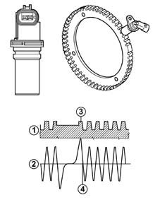

1060GA Check on efficiency of rpm sensor
- Path
- Test > 10 ENGINE UNIT > 1060 DIESEL FUEL INJECTION > 1060G pressure pump electric control > 1060GA Check on efficiency of rpm sensor
- Kind
- test / check procedure
- Applies to
- engines: 1.3 JTD 16v; all production periods
- Interactive page
- https://sloeber94.github.io/elrnDB-fPnd/en/#/2753411
Applies to: engines: 1.3 JTD 16v; all production periods
Check that the gap between the rpm sensor and the flywheel is between 0.5 and 1.5 mm
Check that the rpm sensor resistance is 790 Ohm ± 20%
Check that the sensor output signal corresponds to the enclosed graph.

1. Engine rpm sensor signal toothed wheel profile 2. Reference tooth 3. TDC recognition point